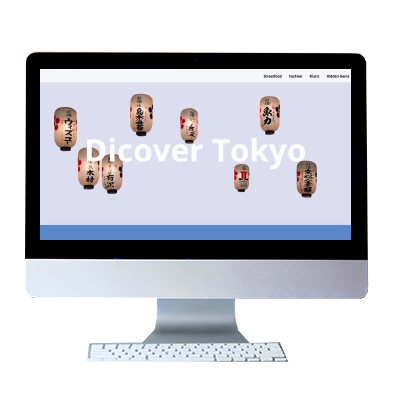

Discover Tokyo
The purpose of this project was to learn how to use scrolling related properties. We had to build a single page website that utilises as many scrolling features (parallax effect, overflow etc.) as possible. The page should contain several visually different sections, a fixed element and media that reacts to scrolling.
Idea
Since the content was up to us, I decided to make a webpage for young people who would like to discover Tokyo.
Process
We had scrolling related exercises in class. In addition I looked up webpages that use scrolling effects to get some more inspiration. In order to come up with the section content, I created a persona. Based on that I came up with a simple theme for each section. I then sketched out effects I would like to incorporate. I tested the effects I was planning on using one by one. In the end I put them together and applied the design.
Solution
All the images that are shown are not mine or edited by me. The
traditional japanese lamps are from Adobe Stock. The other images
are from
Niigata's instagram account
.The images are cropped in Photoshop.
I used HTML, CSS and JS to create the scrollersite you can
have a look at
here. The Github repository is available
here.
Thoughts
It was interesting to see how scrolling effects/properties can be used throughout a webpage and I will definitely try to use them more in future projects.